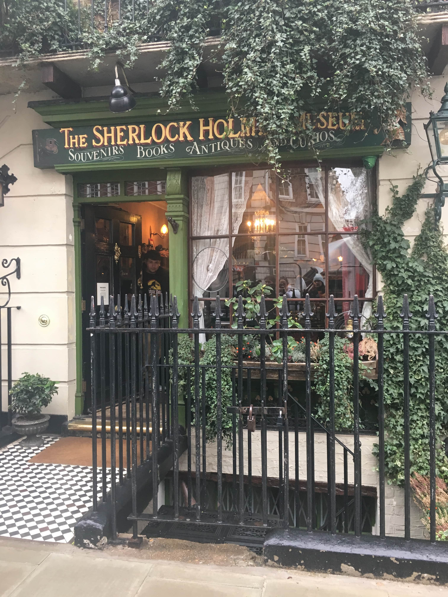

Heroes & Villains
Building an interactive website to tell the famous and adventurous story of Sherlock Holmes.
2018/2019
Visit Website

A trip to the museum

Old or new sherlock
Typography
Colour


Finalising Ideas

Prototype
Website